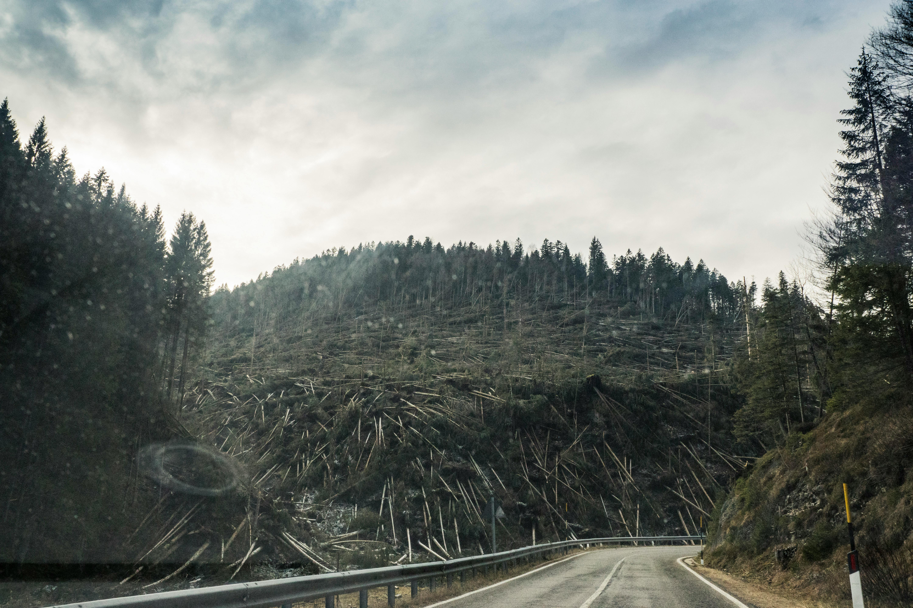

About this site
Web developer Saloni Upadhyay is concerned about the increased rate of deforestation of Amazon Rainforest. It's essential to stay updated on the latest developments and initiatives regarding deforestation in the Amazon, as the situation is dynamic and ongoing efforts are continuously being made to address this critical environmental issue. So, this site is created to raise the awareness about this issue.